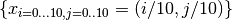
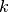
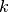
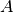
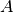
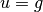
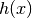
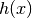

Examples¶
A step-by-step basic example¶
This example shows the basic usage of getfem, on the über-canonical problem above
all others: solving the Laplacian,  on a square,
with the Dirichlet condition
on a square,
with the Dirichlet condition  on the domain boundary. You can find
the py-file of this example under the name demo_step_by_step.py in the
directory interface/tests/python/ of the GetFEM++ distribution.
on the domain boundary. You can find
the py-file of this example under the name demo_step_by_step.py in the
directory interface/tests/python/ of the GetFEM++ distribution.
The first step is to create a Mesh object. It is possible to create simple structured meshes or unstructured meshes for simple geometries (see getfem.Mesh('generate', mesher_object mo, scalar h))) or to rely on an external mesher (see getfem.Mesh('import', string FORMAT, string FILENAME)), or use very simple meshes. For this example, we just consider a regular meshindex{cartesian mesh} whose nodes are 
1 2 3 4 5 6 | # import basic modules
import getfem as gf
import numpy as np
# creation of a simple cartesian mesh
m = gf.Mesh('cartesian', np.arange(0,1.1,0.1), np.arange(0,1.1,0.1))
|
The next step is to create a MeshFem object. This one links a mesh with a set of FEM
1 2 3 4 | # create a MeshFem of for a field of dimension 1 (i.e. a scalar field)
mf = gf.MeshFem(m, 1)
# assign the Q2 fem to all convexes of the MeshFem
mf.set_fem(gf.Fem('FEM_QK(2,2)'))
|
The first instruction builds a new MeshFem object, the second argument specifies
that this object will be used to interpolate scalar fields (since the unknown
 is a scalar field). The second instruction assigns the
is a scalar field). The second instruction assigns the  FEM
to every convex (each basis function is a polynomial of degree 4, remember that
FEM
to every convex (each basis function is a polynomial of degree 4, remember that
 polynomials of degree , while
polynomials of degree , while
 polynomials of degree
polynomials of degree  ). As is a
polynomial FEM, you can view the expression of its basis functions on the
reference convex:
). As is a
polynomial FEM, you can view the expression of its basis functions on the
reference convex:
1 2 | # view the expression of its basis functions on the reference convex
print gf.Fem('FEM_QK(2,2)').poly_str()
|
Now, in order to perform numerical integrations on mf, we need to build a MeshIm object
1 2 | # an exact integration will be used
mim = gf.MeshIm(m, gf.Integ('IM_EXACT_PARALLELEPIPED(2)'))
|
The integration method will be used to compute the various integrals on each element: here we choose to perform exact computations (no quadrature formula), which is possible since the geometric transformation of these convexes from the reference convex is linear (this is true for all simplices, and this is also true for the parallelepipeds of our regular mesh, but it is not true for general quadrangles), and the chosen FEM is polynomial. Hence it is possible to analytically integrate every basis function/product of basis functions/gradients/etc. There are many alternative FEM methods and integration methods (see User Documentation).
Note however that in the general case, approximate integration methods are a better choice than exact integration methods.
Now we have to find the <boundary> of the domain, in order to set a Dirichlet condition. A mesh object has the ability to store some sets of convexes and convex faces. These sets (called <regions>) are accessed via an integer #id
1 2 3 4 | # detect the border of the mesh
border = m.outer_faces()
# mark it as boundary #42
m.set_region(42, border)
|
Here we find the faces of the convexes which are on the boundary of the mesh (i.e. the faces which are not shared by two convexes).
The array border has two rows, on the first row is a convex number, on the second row is a face number (which is local to the convex, there is no global numbering of faces). Then this set of faces is assigned to the region number 42.
At this point, we just have to describe the model and run the solver to get the solution! The “model” is created with the Model constructor. A model is basically an object which build a global linear system (tangent matrix for non-linear problems) and its associated right hand side. Typical modifications are insertion of the stiffness matrix for the problem considered (linear elasticity, laplacian, etc), handling of a set of constraints, Dirichlet condition, addition of a source term to the right hand side etc. The global tangent matrix and its right hand side are stored in the “model” structure.
Let us build a problem with an easy solution: , then
we have (the FEM won’t be able to catch the exact
solution since we use a method).
We start with an empty real model
1 2 | # empty real model
md = gf.Model('real')
|
(a model is either 'real' or 'complex'). And we declare that u is an unknown of the system on the finite element method mf by
1 2 3 | # declare that "u" is an unknown of the system
# on the finite element method `mf`
md.add_fem_variable('u', mf)
|
Now, we add a generic elliptic brick, which handles  problems, where  can be a scalar field, a matrix field, or
an order 4 tensor field. By default,
problems, where  can be a scalar field, a matrix field, or
an order 4 tensor field. By default,  . We add it on our main variable
u with
. We add it on our main variable
u with
1 2 | # add generic elliptic brick on "u"
md.add_Laplacian_brick(mim, 'u');
|
Next we add a Dirichlet condition on the domain boundary
1 2 3 4 | # add Dirichlet condition
g = mf.eval('x*(x-1) - y*(y-1)')
md.add_initialized_fem_data('DirichletData', mf, g)
md.add_Dirichlet_condition_with_multipliers(mim, 'u', mf, 42, 'DirichletData')
|
The two first lines defines a data of the model which represents the value of the
Dirichlet condition. The third one add a Dirichlet condition to the variable u
on the boundary number 42. The dirichlet condition is imposed with lagrange
multipliers. Another possibility is to use a penalization. A MeshFem argument is
also required, as the Dirichlet condition  is imposed in a weak form
where  is
taken in the space of multipliers given by here by mf.
is
taken in the space of multipliers given by here by mf.
Remark:
the polynomial expression was interpolated on mf. It is possible only if mf is of Lagrange type. In this first example we use the same MeshFem for the unknown and for the data such as g, but in the general case, mf won’t be Lagrangian and another (Lagrangian) MeshFem will be used for the description of Dirichlet conditions, source terms etc.
A source term can be added with (uncommented) the following lines
1 2 3 4 | # add source term
#f = mf.eval('0')
#md.add_initialized_fem_data('VolumicData', mf, f)
#md.add_source_term_brick(mim, 'u', 'VolumicData')
|
It only remains now to launch the solver. The linear system is assembled and solve with the instruction
1 2 | # solve the linear system
md.solve()
|
The model now contains the solution (as well as other things, such as the linear system which was solved). It is extracted
1 2 | # extracted solution
u = md.variable('u')
|
Then export solution
1 2 | # export computed solution
mf.export_to_pos('u.pos',u,'Computed solution')
|
and view with gmsh u.pos, see figure Computed solution.
{kind=link}
Another Laplacian with exact solution (source term)¶
This example shows the basic usage of getfem, on the canonical problem: solving
the Laplacian, on a square, with the Dirichlet condition
on the domain boundary  and the Neumann condition
on the domain boundary
and the Neumann condition
on the domain boundary
 . You can find the py-file of this example under the name
demo_laplacian.py in the directory interface/tests/python/ of the GetFEM++
distribution.
. You can find the py-file of this example under the name
demo_laplacian.py in the directory interface/tests/python/ of the GetFEM++
distribution.
We create Mesh, MeshFem, MeshIm object and find the boundary of the domain in the same way as the previous example
1 2 3 4 5 6 7 8 9 10 11 12 13 14 15 16 17 18 19 20 21 22 23 24 25 26 27 28 29 30 31 32 33 34 35 36 37 38 39 40 41 42 43 44 45 | # import basic modules
import getfem as gf
import numpy as np
# boundary names
top = 101 # Dirichlet boundary
down = 102 # Neumann boundary
left = 103 # Dirichlet boundary
right = 104 # Neumann boundary
# parameters
NX = 40 # Mesh parameter
Dirichlet_with_multipliers = True; # Dirichlet condition with multipliers or penalization
dirichlet_coefficient = 1e10; # Penalization coefficient
# mesh creation
m = gf.Mesh('regular_simplices', np.arange(0,1+1./NX,1./NX), np.arange(0,1+1./NX,1./NX))
# create a MeshFem for u and rhs fields of dimension 1 (i.e. a scalar field)
mfu = gf.MeshFem(m, 1)
mfrhs = gf.MeshFem(m, 1)
# assign the P2 fem to all convexes of the both MeshFem
mfu.set_fem(gf.Fem('FEM_PK(2,2)'))
mfrhs.set_fem(gf.Fem('FEM_PK(2,2)'))
# an exact integration will be used
mim = gf.MeshIm(m, gf.Integ('IM_TRIANGLE(4)'))
# boundary selection
flst = m.outer_faces()
fnor = m.normal_of_faces(flst)
ttop = abs(fnor[1,:]-1) < 1e-14
tdown = abs(fnor[1,:]+1) < 1e-14
tleft = abs(fnor[0,:]+1) < 1e-14
tright = abs(fnor[0,:]-1) < 1e-14
ftop = np.compress(ttop, flst, axis=1)
fdown = np.compress(tdown, flst, axis=1)
fleft = np.compress(tleft, flst, axis=1)
fright = np.compress(tright, flst, axis=1)
# mark it as boundary
m.set_region(top, ftop)
m.set_region(down, fdown)
m.set_region(left, fleft)
m.set_region(right, fright)
|
then, we interpolate the exact solution and source terms
1 2 3 4 5 6 | # interpolate the exact solution (assuming mfu is a Lagrange fem)
g = mfu.eval('y*(y-1)*x*(x-1)+x*x*x*x*x')
# interpolate the source terms (assuming mfrhs is a Lagrange fem)
f = mfrhs.eval('-(2*(x*x+y*y)-2*x-2*y+20*x*x*x)')
h = mfrhs.eval('[y*(y-1)*(2*x-1) + 5*x*x*x*x, x*(x-1)*(2*y-1)]')
|
and we bricked the problem as in the previous example
1 2 3 4 5 6 7 8 9 10 11 12 13 14 15 16 17 18 19 20 21 22 23 24 25 26 | # model
md = gf.Model('real')
# add variable and data to model
md.add_fem_variable('u', mfu) # main unknown
md.add_initialized_fem_data('f', mfrhs, f) # volumic source term
md.add_initialized_fem_data('g', mfrhs, g) # Dirichlet condition
md.add_initialized_fem_data('h', mfrhs, h) # Neumann condition
# bricked the problem
md.add_Laplacian_brick(mim, 'u') # laplacian term on u
md.add_source_term_brick(mim, 'u', 'f') # volumic source term
md.add_normal_source_term_brick(mim, 'u', 'h', down) # Neumann condition
md.add_normal_source_term_brick(mim, 'u', 'h', left) # Neumann condition
# Dirichlet condition on the top
if (Dirichlet_with_multipliers):
md.add_Dirichlet_condition_with_multipliers(mim, 'u', mfu, top, 'g')
else:
md.add_Dirichlet_condition_with_penalization(mim, 'u', dirichlet_coefficient, top, 'g')
# Dirichlet condition on the right
if (Dirichlet_with_multipliers):
md.add_Dirichlet_condition_with_multipliers(mim, 'u', mfu, right, 'g')
else:
md.add_Dirichlet_condition_with_penalization(mim, 'u', dirichlet_coefficient, right, 'g')
|
the only change is the add of source term bricks. Finally the solution of the problem is extracted and exported
1 2 3 4 5 6 7 8 9 10 11 12 13 14 15 16 | # assembly of the linear system and solve.
md.solve()
# main unknown
u = md.variable('u')
L2error = gf.compute(mfu, u-g, 'L2 norm', mim)
H1error = gf.compute(mfu, u-g, 'H1 norm', mim)
if (H1error > 1e-3):
print 'Error in L2 norm : ', L2error
print 'Error in H1 norm : ', H1error
print 'Error too large !'
# export data
mfu.export_to_pos('sol.pos', g,'Exact solution',
u,'Computed solution')
|
view with gmsh sol.pos:
{kind=link}
Linear and non-linear elasticity¶
This example uses a mesh that was generated with GiD. The object is meshed with quadratic tetrahedrons. You can find the py-file of this example under the name demo_tripod.py in the directory interface/tests/python/ of the GetFEM++ distribution.
1 2 3 4 5 6 7 8 9 10 11 12 13 14 15 16 17 18 19 20 21 22 23 24 25 26 27 28 29 30 31 32 33 34 35 36 37 38 39 40 41 42 43 44 45 46 47 48 49 50 51 52 53 54 55 56 57 58 59 60 61 62 63 64 65 66 67 68 69 70 71 72 73 74 75 76 77 78 79 80 81 82 83 84 85 86 87 | import getfem as gf
import numpy as np
# parameters
file_msh = 'tripod.GiD.msh'
degree = 2
linear = False
incompressible = False # ensure that degree > 1 when incompressible is on..
E = 1e3
Nu = 0.3
Lambda = E*Nu/((1+Nu)*(1-2*Nu))
Mu = E/(2*(1+Nu))
# create a Mesh object (importing)
m = gf.Mesh('import','gid',file_msh)
m.set('optimize_structure')
# create a MeshFem object
mfu = gf.MeshFem(m,3) # displacement
mfp = gf.MeshFem(m,1) # pressure
mfe = gf.MeshFem(m,3) # for plot displacement
mff = gf.MeshFem(m,1) # for plot von-mises
# assign the FEM
mfu.set_fem(gf.Fem('FEM_PK(3,%d)' % (degree,)))
mfp.set_fem(gf.Fem('FEM_PK_DISCONTINUOUS(3,0)'))
mfe.set_fem(gf.Fem('FEM_PK_DISCONTINUOUS(3,1,0.01)'))
mff.set_fem(gf.Fem('FEM_PK_DISCONTINUOUS(3,1,0.01)'))
# build a MeshIm object
mim = gf.MeshIm(m,gf.Integ('IM_TETRAHEDRON(5)'))
print 'nbcvs=%d, nbpts=%d, qdim=%d, fem = %s, nbdof=%d' % \
(m.nbcvs(),m.nbpts(),mfu.qdim(),mfu.fem()[0].char(),mfu.nbdof())
# detect some boundary of the mesh
P = m.pts()
ctop = (abs(P[1,:] - 13) < 1e-6)
cbot = (abs(P[1,:] + 10) < 1e-6)
pidtop = np.compress(ctop,range(0,m.nbpts()))
pidbot = np.compress(cbot,range(0,m.nbpts()))
ftop = m.faces_from_pid(pidtop)
fbot = m.faces_from_pid(pidbot)
# create boundary region
NEUMANN_BOUNDARY = 1
DIRICHLET_BOUNDARY = 2
m.set_region(NEUMANN_BOUNDARY,ftop)
m.set_region(DIRICHLET_BOUNDARY,fbot)
# the model bricks
if linear:
b0 = gf.MdBrick('isotropic_linearized_elasticity',mim,mfu)
b0.set_param('lambda',Lambda)
b0.set_param('mu',Mu)
if (incompressible):
b1 = gf.MdBrick('linear_incompressibility term',b0,mfp)
else:
b1 = b0
else:
# large deformation with a linearized material law.. not a very good choice!
if (incompressible):
b0 = gf.MdBrick('nonlinear_elasticity',mim,mfu,'Mooney_Rivlin')
b0.set_param('params',[Lambda,Mu])
b1 = gf.MdBrick('nonlinear_elasticity_incompressibility_term',b0,mfp)
else:
b0 = gf.MdBrick('nonlinear_elasticity',mim,mfu,'SaintVenant_Kirchhoff')
#b0 = gf.MdBrick('nonlinear_elasticity',mim,mfu,'Ciarlet_Geymonat')
b0.set_param('params',[Lambda,Mu])
b1 = b0
b2 = gf.MdBrick('source_term',b1,NEUMANN_BOUNDARY)
b2.set_param('source_term',[0,-10,0])
b3 = gf.MdBrick('dirichlet',b2,DIRICHLET_BOUNDARY,mfu,'penalized')
# create model state
mds = gf.MdState(b3)
# running solve...
b3.solve(mds,'noisy','lsolver','superlu')
# extracted solution
U = mds.state()
# post-processing
VM = b0.von_mises(mds,mff)
# export U and VM in a pos file
sl = gf.Slice(('boundary',),mfu,1)
sl.export_to_pos('sol.pos', mfu, U, 'Displacement', mff, VM, 'Von Mises Stress')
|
Here is the final figure, displaying the Von Mises stress and displacements norms:

(a) Tripod Von Mises, (b) Tripod displacements norms.
Avoiding the model framework¶
The model bricks are very convenient, as they hide most of the details of the assembly of the final linear systems. However it is also possible to stay at a lower level, and handle the assembly of linear systems, and their resolution, directly in Python. For example, the demonstration demo_tripod_alt.py is very similar to the demo_tripod.py except that the assembly is explicit
# create a MeshFem object
mfd = gf.MeshFem(m,1) # data
# assign the FEM
mfd.set_fem(gf.Fem('FEM_PK(3,0)'))
# assembly
nbd = mfd.nbdof()
F = gf.asm_boundary_source(NEUMANN_BOUNDARY, mim, mfu, mfd, np.repeat([[0],[-100],[0]],nbd,1))
K = gf.asm_linear_elasticity(mim, mfu, mfd, np.repeat([Lambda], nbd), np.repeat([Mu], nbd))
# handle Dirichlet condition
(H,R) = gf.asm_dirichlet(DIRICHLET_BOUNDARY, mim, mfu, mfd, mfd.eval('numpy.identity(3)'), mfd.eval('[0,0,0]'))
(N,U0) = H.dirichlet_nullspace(R)
Nt = gf.Spmat('copy',N)
Nt.transpose()
KK = Nt*K*N
FF = Nt*F # FF = Nt*(F-K*U0)
# solve ...
P = gf.Precond('ildlt',KK)
UU = gf.linsolve_cg(KK,FF,P)
U = N*UU+U0
# post-processing
sl = gf.Slice(('boundary',), mfu, degree)
# compute the Von Mises Stress
DU = gf.compute_gradient(mfu,U,mfe)
VM = np.zeros((DU.shape[2],),'d')
Sigma = DU
for i in range(DU.shape[2]):
d = np.array(DU[:,:,i])
E = (d+d.T)*0.5
Sigma[:,:,i]=E
VM[i] = np.sum(E**2) - (1./3.)*np.sum(np.diagonal(E))**2
SigmaSL = gf.compute_interpolate_on(mfe,Sigma,sl)
# export to Gmsh
sl.export_to_pos('tripod.pos', mfe, VM,'Von Mises Stress', mfu, U, 'Displacement')
sl.export_to_pos('tripod_ev.pos', mfu, U, 'Displacement', SigmaSL, 'stress')
In getfem-interface, the assembly of vectors, and matrices is done via the gf.asm_*
functions. The Dirichlet condition is handled in the
weak form  (where
 is a matrix field – here it is constant and
equal to the identity). The reduced system KK UU = FF is then built via the
elimination of Dirichlet constraints from the original system. Note that it
might be more efficient (and simpler) to deal with Dirichlet condition via a
penalization technique.
(where
 is a matrix field – here it is constant and
equal to the identity). The reduced system KK UU = FF is then built via the
elimination of Dirichlet constraints from the original system. Note that it
might be more efficient (and simpler) to deal with Dirichlet condition via a
penalization technique.
Other examples¶
- the demo_refine.py script shows a simple 2D or 3D bar whose extremity is clamped. An adaptative refinement is used to obtain a better approximation in the area where the stress is singular (the transition between the clamped area and the neumann boundary).
- the demo_nonlinear_elasticity.py script shows a 3D bar which is is bended and twisted. This is a quasi-static problem as the deformation is applied in many steps. At each step, a non-linear (large deformations) elasticity problem is solved.
- the demo_stokes_3D_tank.py script shows a Stokes (viscous fluid) problem in a tank. The demo_stokes_3D_tank_draw.py shows how to draw a nice plot of the solution, with mesh slices and stream lines. Note that the demo_stokes_3D_tank_alt.py is the old example, which uses the deprecated gf_solve function.
- the demo_bilaplacian.py script is just an adaption of the GetFEM++ example tests/bilaplacian.cc. Solve the bilaplacian (or a Kirchhoff-Love plate model) on a square.
- the demo_plasticity.py script is an adaptation of the GetFEM++ example tests/plasticity.cc: a 2D or 3D bar is bended in many steps, and the plasticity of the material is taken into account (plastification occurs when the material’s Von Mises exceeds a given threshold).
- the demo_wave2D.py is a 2D scalar wave equation example (diffraction of a plane wave by a cylinder), with high order geometric transformations and high order FEMs.

目次
前のトピックへ
次のトピックへ
Download
Main documentations
- GetFEM++ User documentation
- Python Interface
- Matlab Interface
- Scilab Interface
- Gmm++
- GetFEM++ project